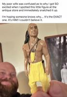

0


An anonymous reader quotes a report from the Associated Press: The contiguous United States sizzled to its hottest month ever last month, according to the National Oceanic and Atmospheric Administration. July averaged 76.89 degrees Fahrenheit (24.94 degrees Celsius) across the Lower 48 states, eclipsing the Dust Bowl's July 1936 by an eighth of a degree. Records go back to 1895. [...] Although it was unusually cool in Alaska, hotter-than-normal conditions blanketed the Lower 48, with the most excessive heat in the Mountain West, Southwest, Northern Plains and Southeast. The heat was so widespread that every one of the Lower 48 states was at least 1 degree Fahrenheit (nearly 0.6 degrees Celsius) warmer than the 20th century average, said Russ Vose, chief of monitoring at NOAA's National Center for Environmental Information.
[...] The biggest driver of the record heat was nighttime lows that smashed the old mark for hottest minimums by 0.7 degrees, NOAA said. Hotter nights are a classic sign of human-caused climate change, according to scientists and several studies in peer-reviewed literature. NOAA's calculation is based on averaging 24 hours of temperature, not just highs or lows. "If you're talking heat waves, that nighttime low is incredibly important for determining total heat stress," [said meteorologist Jeff Masters of Yale Climate Connections]. "So if it doesn't cool off at night, your body doesn't have time to readjust to all the heat." As nighttime temperatures increase, more people die and lose sleep, studies show.
The years 2021 and 1936 tie for America's hottest summer, which is June through August. Through July, 2026 is a shade cooler than 2021, which was powered by record heat in June. Because of climate change, Masters said, "this may be one of the coolest years we're gonna experience for the rest of our lives." What's needed, Masters said, is "to stop burning so many fossil fuels. We also need to be spending money to adapt to the new climate that we've put in place."
Read more of this story at Slashdot.
Cloudflare data suggests desktop Linux usage in North America has climbed to 6.4%, up from 4.1% a year earlier, with one post-holiday workday briefly spiking to 22%. ZDNet reports: [B]elieve it or not, on Monday, July 6, when people were back after the July 4 holiday, Linux usage jumped to a high of 22%. The users of these systems are not AI agents or bots, but real people. I set Cloudflare to count humans rather than bots. If you include people and bots, Linux has a 9.7% market share. That proportion is similar to StatCounter's score. By Cloudflare's count, bots alone come to 19%.
These numbers tell us that workers are leading the way to the Linux desktop. [...] However, past performance doesn't explain present trends. So, why are we now seeing such a bump in Linux desktop growth? Experts believe this trend is largely AI developers and Linux users running AI Agents. For example, as David Linthicum, former managing director and chief cloud strategy officer at Deloitte Consulting and AI and cloud influencer, recently observed, while "Windows 11 can technically run local AI workloads, but as you begin using multiple tools, managing different projects, and installing various dependencies, the friction starts to build," it's a different story for Linux users.
Linthicum continued: "Linux delivered what I can only describe as a true 'AI desktop' experience. Setup was straightforward, mainstream AI instructions matched what you'd actually see in your environment, and GPU-accelerated apps simply worked -- consistently. I spent far less time troubleshooting and far more time actually executing on projects." As for agents, Linux Foundation CEO Jim Zemlin summed up their role succinctly: "Linux is the OS of choice for AI agents." Desktop Linux is also gaining momentum as frustration with Windows 11 and the end of Windows 10 support push users to alternatives, particularly on older PCs that can't officially upgrade. At the same time, Linux has become much easier to use, install software on, and game with, lowering many of the traditional barriers to switching.
Read more of this story at Slashdot.
Ian Clarke (aka ancient Slashdot reader Sanity), designer of the peer-to-peer communication platform Freenet, is back with an update on the project's progress following the launch of its P2P network in March. He writes: Earlier this year, Slashdot covered the launch of the completely redesigned Freenet. I recently gave a talk about what we've been building since then. Unlike traditional web applications, apps on Freenet have no central server or database; instead application state is distributed across the network. These now include decentralized group chat, publishing, search, and fully decentralized Git hosting. The talk also gets into some of Freenet's internals, including how we use machine learning for network routing.
Read more of this story at Slashdot.
Gemini has become Google's fastest-growing product ever, reaching 1 billion monthly active users faster than any of the company's 13 other billion-user services. Ars Technica reports: Gemini has wormed its way into virtually every Google product and service, powering email organization in Gmail, document summary in Drive, and much more. Gemini is also core to Google's flagship search experience, with AI Mode and AI Overviews becoming increasingly hard to avoid. The 1 billion-user metric has nothing to do with any of that, though.
These 1 billion users may also be encountering Gemini in all those places, but that's not the MAU metric. Pichai is talking only about people who are opening the Gemini app or visiting the Gemini web interface to enter a prompt or access Gemini Live. If you used Gemini only once in the past month, you are part of this cohort.
Read more of this story at Slashdot.
Spotify will begin labeling AI-generated artist identities with "AI Persona" badges and exclude their music from editorial, algorithmic, and personalized recommendations unless users explicitly follow them. The company says the designation applies to whether an artist profile represents a real person, not whether AI was used to make the music, and will allow appeals for mislabeling. TechCrunch reports: While Spotify will allow artists to identify themselves as AI Personas, the company says it won't rely on self-disclosure alone. It will also review artist profiles and identify those where the artist's name and imagery appear to represent photorealistic AI-generated identities. Spotify said it will begin its review with profiles that have met pre-defined audience thresholds to ensure the more listened-to artists are covered first.
Once labeled, the AI Persona badges will appear on the artist's profile in the banner and the About section, in Search, and on track rows across playlists. By default, Spotify won't include AI Personas in its editorial or algorithmic recommendations, nor will it add AI Personas' music to users' personalized recommendations -- unless they happen to follow an AI Persona. Only users can choose to follow an artist, so it's an explicit signal that the user wants to hear more music from that person or group. Spotify wrote in its announcement that, "while we believe all artists have creative choice in determining how they present themselves, Spotify's programming is focused on elevating music from authentic artists building careers in music."
"Although there's a broad spectrum in how artists use AI as a creative tool, the question of whether a profile represents an actual human is one where Spotify can help make a clear determination. This badge is about the artist's public identity, not about how the music was made," the company said.
Read more of this story at Slashdot.
Starting today, unsolicited telemarking calls are banned in France unless consumers explicitly consent to them. Companies that violate the law can face fines of up to 375,000 euros per call, though existing customers can still be contacted with related offers. Le Monde reports: The government says the law is a response to years of consumer complaints. Authorities estimate that about three-quarters of people in France receive at least one unsolicited sales call every week, and many receive more. In 2024, 11 consumer organizations issued a joint call for a ban, denouncing "relentless harassment of consumers through countless unwanted telemarketing calls to both landlines and mobile phones -- an intrusion that has become a regular part of their daily lives."
Now, "businesses are prohibited from contacting consumers without their prior consent," said Alice Vilcot, chief of staff at the Directorate-General for Competition, Consumer Affairs and Prevention of Fraud. "That consent can be withdrawn at any time." [...] Previously in France, people who wanted to avoid marketing calls had to register their number with a government-run service, but consumer groups said some call centers ignored the list. Vilcot noted that an Ireland-based company was fined 6 million euros ($6.9 million) last year for violating France's previous telemarketing rules by calling people on the no-call list.
Read more of this story at Slashdot.
An anonymous reader quotes a report from the BBC: England is on track to become one of the first countries in the world to eliminate hepatitis C, a dangerous virus that attacks the liver, figures show. The target of treating 80% of all known cases has already been met, and deaths from the virus have fallen by 36% in the last decade, just short of what is needed by 2030. Taking antiviral tablets for 8 to 12 weeks can cure more than 95% of cases. Initiatives including A&E blood tests, GP registration testing and free at-home tests have helped to find people who were previously undiagnosed, says NHS England.
NHS England says that since 2015, more than 100,000 people have been diagnosed and treated for hepatitis C, meaning the country is already meeting that target. Another goal -- a 65% reduction in hepatitis C-related mortality compared with 2015 levels -- has yet to be met, but might be before the 2030 target date. Around 50,200 adults are living with hepatitis C, figures for England in 2024 suggest. Estimates indicate 84.6% of those living with hepatitis C have been diagnosed -- just short of the 90% target. The Hepatitis C Trust says England is "on the cusp" of one of the most significant public health achievements in our country's history.
Read more of this story at Slashdot.
Longtime Slashdot reader DF5JT writes: On July 26, I posted a single announcement in r/backgammon: GNU Backgammon for Android, GPLv3, the first standalone backgammon engine on F-Droid. Reddit's spam filter removed the post and permanently banned my 11-year, 30,000-karma account -- the result is publicly visible at reddit.com/user/OE1FEU. To this day, Reddit has given no reason whatsoever, although Article 17 of the EU's Digital Services Act makes a statement of reasons mandatory. The only appeal channel is a 250-character web form that sends no confirmation and has never been answered; Reddit's own help text admits: "you may not have received a message to your inbox." A GDPR export of 11 years of data came to 7.2 MB; every post was truncated after a few lines, with zero data about the ban decision.
So I spent one day escalating through every mechanism the EU provides: certified out-of-court dispute settlement at Austria's RTR, complaints with the Austrian and Dutch Digital Services Coordinators, the data protection authority (citing the ECJ's SCHUFA ruling on automated decisions), noyb, and Austria's consumer association. Bonus finding: the European Commission's DSA Transparency Database contains 14,067 Reddit statements of reasons for that week -- none for my ban -- and the Commission's own feedback form limits reports to 500 characters and crashed with a 500 Server Error. Is the DSA enforceable for ordinary users, or just paperwork?
Read more of this story at Slashdot.
alternative_right shares a report from 404 Media: Robotics companies promise that video-camera-toting security robots can deter and detect crime. But many companies are rethinking the approach after a trail of canceled contracts and questions about whether the artificial intelligence-powered bots are meeting the needs of businesses and local governments. Proof News found evidence of at least 21 security robot deployments since 2015. We contacted contract holders and combed news articles and determined that at least 13 of those programs have ended. Silicon Valley-based Knightscope secured the most security robot contracts, according to Proof's analysis, and also suffered the bulk of cancellations.
For example, New York City's then-Mayor Eric Adams installed a Knightscope robot on the overnight shift at the Times Square subway station, but the program was scrapped when the pilot expired in 2024. City leaders did not respond to Proof News' questions about why the robot wasn't renewed. By the end of its assignment, it was reportedly gathering dust in an empty storefront. Outside Columbus, Ohio, the city of Dublin pulled the plug on a Knightscope robot in May, ending its two-year pilot program after less than 10 months. The city enlisted the robot, dubbed DubBot, to patrol a downtown park, but city spokeswoman Robyn Gray said it "did not fully meet our operational needs," and failed to identify any criminal incidents or lead to any tickets or arrests.
[...] Seeking a new path forward in the security industry, Knightscope CEO William Santana Li said the company is forging a new model, combining its robots and AI-powered software with another key ingredient: human security guards. Knightscope announced it purchased Event Risk LLC, a national security guard firm, earlier this year. Knightscope has incurred net losses since inception in 2013, according to its most recent quarterly filing with the U.S. Securities and Exchange Commission, and is $273 million in debt. Knightscope hopes its pivot to incorporate people will give it a greater share of the physical security market -- which the company believes is worth an estimated $230 billion annually. Li declined to answer questions about the disbanded programs, but said in an email, "Technology cannot do everything -- and neither can people -- but the combination can be very powerful."
Read more of this story at Slashdot.
An anonymous reader shares a report from The Conversation, written by Hatim Sharif, a civil and environmental engineer who has "spent more than two decades staring at maps" and spatial data. Sharif finds one connection especially fascinating: the link between spatial reasoning and why taxi drivers seem to have lower rates of Alzheimer's. From the report: Taxi and ambulance drivers are less likely than workers in almost any other job to die of Alzheimer's disease. That was the surprising result of a 2024 study examining the death certificates of nearly 9 million people in the U.S. [...] Of the 9 million death certificates from January 2020 to December 2022 that researchers examined, taxi and ambulance drivers had the lowest risk of dying from Alzheimer's disease out of 443 occupations. After adjusting for age, sex, race, ethnicity and education, roughly 1 in 100 taxi and ambulance drivers died of Alzheimer's, compared with 1 in 60 people overall. This pattern did not extend to other driving jobs.
The researchers concluded that the key to reducing the risk of Alzheimer's was not driving itself but continuous real-time navigation: the constant work of locating yourself in space, tracking a destination and updating a mental map as conditions change. Drivers whose jobs relied on fixed or predetermined routes, like bus drivers and aircraft pilots, didn't seem to experience a similar advantage. Researchers believe the association between navigation-heavy work and lower Alzheimer's risk centers on the hippocampus, a part of the brain that governs memory and spatial navigation. It's one of the first brain regions that Alzheimer's damages: Problems with spatial navigation and orientation are among the earliest signs of the disease, sometimes surfacing before obvious memory loss.
In one landmark 2000 study, neuroscientists compared the brains of licensed London taxi drivers with those of people who did not drive cabs. Their findings provided the first evidence via structural imaging that regions of the adult brain can measurably change under sustained navigational demand. To earn a license, London cabbies must memorize more than 25,000 streets within a 6-mile radius of Charing Cross, a challenge known as "The Knowledge" that takes three to four years.
The researchers found that London taxi drivers had measurably more gray matter in the posterior hippocampus, a brain area tied to storing large-scale spatial maps. That volume tracked with experience: The longer someone had driven, the larger that part of the brain. The change was built through practice, not inherited. While people who are good at navigation might gravitate to this kind of job, the job itself does have an impact on the brain. Together, these two studies make a coherent case: Work that intensively exercises the hippocampus may reshape it, and that reshaping may protect against one of the most feared diseases of aging.
Read more of this story at Slashdot.
A routine security assessment found that cameras aboard Royal Navy Kraken unmanned surface vessels were sending "heartbeat" signals to an IP address in China. "A thorough investigation found no evidence of MoD data or systems being accessed, compromised or transmitted externally," said a Ministry of Defense spokesperson. "Our assurance and testing processes are designed to identify and address potential vulnerabilities early, and we continue to undertake routine security activity across our systems and equipment." The Register reports: According to reports, the talkative components were cameras sourced by Kraken from a third-party supplier. The incident raises questions about supply chains, audits, and cybersecurity in the British armed forces. The spokesperson said: "The first duty of government is national security, and we take the security of our equipment, networks, and data extremely seriously."
Read more of this story at Slashdot.
An anonymous reader quotes a report from TechCrunch: Ceva Logistics, one of the world's largest shipping and logistics giants, has been hacked. Several companies that rely on Ceva for shipping their products to their customers say that their personal information was also stolen in the breach. The cyberattack on Ceva is affecting at least eight warehouses across Europe used for shipping goods across the continent, the company told TechCrunch. Industry news site FreightWaves reports that the hack began on July 29 and is causing shipping delays for many of the goods in affected warehouses.
Ceva is a France-headquartered shipping and logistics giant that companies around the world rely on to deliver their goods from their assembly lines to customer homes. The company, which brought in $18.3 billion in revenue in 2025, has over a thousand warehouses across the world. [...] The hack at Ceva also resulted in a data breach, affecting a large amount of personal information belonging to retail customers that Ceva relies on for delivering goods to people's home addresses. Several companies reported that hackers took their customers' names, home addresses, phone numbers, and email addresses used to place their orders from Ceva's systems.
Dutch online retail giant Bol said on its website that hackers gained access to systems of its warehousing partner, Ceva, and warned that their customers' data may have been taken. Bol also said that it expects delays and some customer orders to be canceled as a result of the incident. De Bijenkorf, another Dutch luxury retailer, similarly confirmed order delays following the theft of its customers' data, per local media. Football club Ajax, banking giant ING, and eyeglass maker Ace & Tate also reported that customers' shipping information was affected. Video game giant Valve told customers that it learned on August 7 that data was taken from Ceva's systems, and alerted customers who recently bought its Steam hardware that they had personal information taken in the incident. Valve said in its note to customers, posted to Reddit, that Ceva stores their shipping and delivery information for 90 days following their order. So far, Ceva says the agency has received data breach reports from 10 organizations in relation to the incident.
Read more of this story at Slashdot.
Paramount CEO David Ellison is threatening to begin moving the studio out of California on October 1 if state Attorney General Rob Bonta refuses to enter settlement talks over the proposed Paramount-Warner Bros. Discovery merger. The company would reportedly move its Los Angeles headquarters first and shift most studio jobs out of the state over five years, with Georgia, Texas, and Tennessee under consideration. Variety reports: Ellison's threat to relocate Paramount in retaliation for California's Bonta leading the charge to kill the WBD deal -- a move that would include much of its studio operations, over time -- was first reported by industry newsletter Puck. In response, Bonta called Ellison's planned exit from the state an "attempt to blackmail the state into letting an illegal deal through."
"Paramount has lost the plot as it continues to lose in court," the attorney general wrote in a post on X. "It didn't work the first time -- on the eve of our July lawsuit -- and it won't work this time." Bonta has not publicly said what concessions from Paramount-WBD he would consider acceptable enough to take the lawsuit off the table. But the Democratic attorney general has said any remedies would need to be "structural" (i.e., divestments) rather than "behavioral" (e.g., imposing certain production quotas).
Oct. 1 is when Paramount will begin accruing a "ticking fee" payable to Warner Bros. Discovery shareholders of $7 million per day. The trial in the state AGs' lawsuit is scheduled to start March 2, 2027, roughly five months after that, so Paramount would be on the hook to pay around $1.2 billion to WBD shareholders by the time the trial is scheduled to conclude. (Paramount's ticking-fee payments to WBD are not due until the deal closes.) At the Aug. 5 meeting on Paramount's lot, Ellison told his 12-member senior executive team he expects Paramount to prevail in the antitrust case against the states. However, he also said that if Bonta balks at talks, Paramount will start packing up and moving out of the Golden State in less than two months.
Read more of this story at Slashdot.
Ancient Slashdot reader Alain Williams shares a report from The Guardian: Mark Zuckerberg has faced questions over why a small cruise ship in south-east Alaska rescued a stranded skiff and its crew when his 387ft superyacht had been closer. The Silicon Valley billionaire's yacht, worth a reported $300 million, is said to have "repeatedly" declined to assist when a nearby boat called for help last week. Zuckerberg, CEO of Facebook and Instagram owner Meta Platforms, was not on board at the time, a spokesperson told Forbes.
When a nearby 21ft skiff ran out of fuel between Petersburg and Juneau, the Alaska Beacon reported operators of a cruise ship that was further away than Zuckerberg's yacht came to the rescue. "I'm on a small-ship Alaska cruise with my son," a passenger on the UnCruise Adventures ship Wilderness Legacy posted on Bluesky. "Our boat rescued a stranded vessel last night and apparently we did that after the Coast Guard radioed Mark Zuckerberg's yacht -- which was closer -- and they repeatedly refused to respond. (There was near unanimous booing when the captain announced this)." A spokesperson for Zuckerberg told Forbes that the yacht crew had been operating on a different radio channel and "the assist was already under way" by the time they discovered the broadcast.
Read more of this story at Slashdot.
An anonymous reader quotes a report from Wired: As AI models gain advanced capabilities to find vulnerabilities in software, develop ways to exploit them, and even carry out autonomous hacking sprees, researchers offered a sobering new example on Tuesday, disclosing vulnerabilities in the video conferencing platform Zoom that could have been exploited to take over targets' devices. Anyone on a call that involved screen sharing, whether participants or the host, would have been vulnerable to a silent attack that could be carried out with no indication and no interaction from the victim.
Researchers from the digital defense firm A Security say thebugwas discovered in early June using publicly available AI models, and that it took fewer than 20 prompts to uncover the vulnerabilities and create a working attack. Zoom issued a security advisory on Tuesday, including details about fixes the company has already begun rolling out to address the flaws, which affected devices running all operating systems that Zoom supports -- Windows, macOS, Linux, iOS, and Android.
The vulnerabilities were specifically in the protocol used to facilitate real-time annotation during screen sharing. The researchers say that their AI bug hunting systems specifically delved into this component because, like human bug hunters, they have been trained that convoluted and obscure functions often contain overlooked vulnerabilities. This is particularly true with proprietary, closed-source software. An established company like Zoom presumably does extensive code review and vetting on all components and functions, but without the benefit of public, open review, esoteric yet complex features like annotation are more likely to contain mistakes. The bugs are now patched, with Zoom issuing both server and client-side fixes—or patches for both Zoom's own servers and the applications that run on customer devices. But the researchers emphasize that it was alarming to contemplate bugs that could have been exploited to take over a target device simply by getting someone onto a Zoom call. "What is interesting for us and what we believe is dangerous is the democratization of these capabilities -- the barrier to entry is dropping rapidly," A Security cofounder Omer Gull told WIRED ahead of the disclosure. "Before it would have taken a team of five people maybe six months with a lot of refining and iteration to find this. Now people can reach the same results with under 20 prompts. And Zoom is an important type of target because people assume trust when using it. They don't see it as a threat."
Read more of this story at Slashdot.
Nduka Orjinmo / Bloomberg : Briter: Africa-focused startups raised $3.3B in H1 2026, up 73% YoY, driven by Zipline's $950M raise; US- and UAE-incorporated entities raised half the capital — African-focused startups are on track for a record fundraising year after investments surged in the first six months …
Jagmeet Singh / TechCrunch : Bengaluru-based Yulu, which gets ~95% of its revenue from renting e-bikes to gig workers, raised a $93M Series C, sources say at a ~$170M post-money valuation — As India's quick-commerce platforms race to deliver everything from groceries to smartphones in minutes, electric mobility startup Yulu …
Bloomberg : Sources: Singapore-based data center operator DayOne confidentially files for a US IPO, aims to list as soon as next quarter, and is considering raising ~$5B — DayOne Data Centers has confidentially filed for a US initial public offering, according to people familiar with the matter.
Tom Wilson / Financial Times : Researchers say suspected Chinese hackers used open-source AI agents to build an autonomous hacking tool that compromised Taiwanese government websites in July — AI agents ran simultaneous reconnaissance and break-ins in display of new phase of cyberwarfare.
Chase DiFeliciantonio / Politico : OpenAI VP of Global Policy Ann O'Leary says AI policy in the US is anchored in the states and informed by California's AI transparency law passed last year — SACRAMENTO, California — A senior OpenAI global affairs chief said AI policy is still anchored in the states …
Alanna Okun / Bloomberg : A look at Candy Crush's continued popularity 15 years after its launch, with an estimated 81.5M MAUs and in-app revenue of $876.5M in fiscal year 2025 — Fifteen years in, those shiny sweets are still on top. — Johanna Chouraqui doesn't time travel anymore.
Bloomberg : A profile of Suno, which has been used by more than 100M people since 2023 and has 2M+ paid subscribers, as it faces copyright lawsuits from UMG and Sony Music — Investors are betting the $5 billion company will be the next Spotify. — Mikey Shulman stands in the middle of a dark concert hall …
Frederic Lardinois / The New Stack : OpenAI launches a ChatGPT desktop app for Linux in preview, supporting ChatGPT Work, Codex, and more; Computer Use outside the in-app browser is not available — On Tuesday, OpenAI launched its ChatGPT desktop for Linux. — Now in preview, the app, which combines ChatGPT, ChatGPT Work …
Nikhilesh De / CoinDesk : The CFTC uses its “emergency authority” to order Kalshi to continue operating in New York after the state filed a lawsuit in July seeking to shutter Kalshi — The U.S. Commodity Futures Trading Commission announced it had ordered prediction market operator Kalshi to continue operating …
Yueqi Yang / The Information : Source: Kalshi's annualized revenue topped $4B in July, up from $2B+ two months earlier, and its operating expenses totaled $300M in June — World Cup wagers helped double Kalshi's revenue to a more than $4 billion annualized rate in July, from a pace of over $2 billion two months earlier, a person familiar with the matter said.
Natasha Mascarenhas / Bloomberg : Accel raised $3.5B in funds for early-stage investments, including a $1.35B global expansion fund for larger early-stage rounds and rapid follow-on investments — Accel, a global venture capital firm with offices in Silicon Valley, London and Bangalore, India, has raised $3.5 billion …
Will Knight / Wired : Researchers find that feeding a frontier model's encrypted reasoning traces to a weaker model from the same provider can make it output the traces in plaintext — Researchers devised a way to extract “reasoning traces” from Claude, GPT, and Gemini. What they found, they say …
Business Insider : Sources: former OpenAI Chief Product Officer Kevin Weil is aiming to raise $150M for a new AI science startup, seeking a valuation of at least $750M — Kevin Weil, the former chief product officer of OpenAI, has sought a valuation of at least $750 million for a new AI science startup …
Jordan Novet / CNBC : CoreWeave reports Q2 revenue up 112% YoY to $2.58B, vs. $2.56B est., and a $104B revenue backlog, with 1.5 GW of contracted power; CRWV jumps 9%+ after hours — CoreWeave shares jumped 14% in extended trading on Tuesday after the AI infrastructure provider reported results than topped Wall Street expectations.
Dina Bass / Bloomberg : Super Micro reports Q4 revenue up 93% YoY to $11.1B, vs. $11.3B est., and forecasts Q1 and FY 2027 revenue above estimates; SMCI jumps 9%+ after hours — Super Micro Computer Inc. gave a revenue forecast for the current quarter that topped analysts' estimates, a sign the booming artificial …